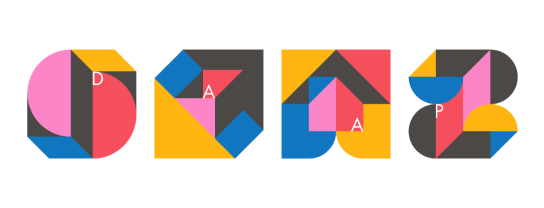

This project is a result of my thesis work for the Master of Design Program at the College of Design, Architecture, Art and Planning (D.A.A.P.), University of Cincinnati. One can also view this project on Bēhance at DAAP Work 2021.

Effective Individual contribution to team-based collaboration in the virtual work environment (VWE) relies on mutual trust. People tend to accept and trust others when they first meet each other. In contrast, consolidation of long-lasting trust depends on satisfying people’s expectancy in commitment fulfillment. In the conventional workplace, the continuous witness of the process that someone is fulfilling their commitment is the key factor in strengthening one’s trust in another. However, due to concerns in ethics and technology limitations, watching other people working at home is not possible in the virtual work environment. Therefore, reviewing people’s workflow at a behavioral level provides new solutions for developing interpersonal communication (witness of the process of commitment fulfillment), goal attainment (commitment fulfillment), and mutual trust in the virtual work environment. As a result of this thesis, there are 6 typical types of work behavior found, and 10 design guidelines for the virtual work environment are concluded.

This project can satisfy people who are working in different industries (Guideline 1). And it also matches Guideline 3 by using email as the method to communicating with different people to break down the barrier of platforms. Also, because of balancing the needs of work-related conversations and non-work-related conversations, the design offers users the opportunity to have “small talk” with their coworkers (Guideline 5), which makes bonds tight in online working. It's also a help to inspire the establishing of "Mediation Space" (Guideline 9). And for sure, by using goal-oriented conversation, the design can reduce distractive conversations.
10 Guidelines
Zhu, S. (2021). Individual Contribution to Team-based Collaboration in A Virtual Work Environment [Master’s thesis, University of Cincinnati]. OhioLINK Electronic Theses and Dissertations Center. http://rave.ohiolink.edu/etdc/view?acc_num=ucin1623241598347739
Research in this project is designed into three phases: Categorization, Observation, and Synthesis.

In the conclusion of this brief history of workplace development, it is clear that the workplace’s development process has evolved from centralizing the workforce and dividing positions to considering “employees morale”, from merely focusing on efficiency to including humanity and productivity.
The enhancement of individual power is driven by both economy and technology. According to a World Economic Forum report before the coronavirus pandemic, businesses had already expressed a desire to increase their flexibility in engaging workers. The respondents in the report expected the application of companies’ decentralized operations could introduce jobs such as “project-based, temporary and freelancing roles”.
The lines that connect central brainstormed ideas, the top five trends, and the bottom five needs show whether the concept meets future trends and basic demands of workplaces. The more connections related to the 5 trends, the more the idea adapts to the future society. The more connections that are related to the 5 needs, the function of the idea is more compatible with the demand for a functional workplace. Therefore, as the figure suggests, workplaces in the near- term future may be Home Office and Mobile Office, which are both directly related to creating a virtual work environment (VWE).

Interviewees that were involved in the early stage of the research
To learn whether my prediction reflects the actual trends of peo- ple’s workplace and their life change. I did three interviews about people’s workplace. The research question for this transgenerational research is How the Relationship Between Workplace And People in China Changes Through Time. The reason I focus on China is the work condition and purpose changes rapidly from rural economy to modern economy, which could made it easy to get access to a primary material for the varying workplace. There are three people engaged in this research as interviewees and they are respectively present three different generations.

The graph shows how I coded these transcripts.
The lines that connect central brainstormed ideas, the top five trends, and the bottom five needs show whether the concept meets future trends and basic demands of workplaces. The more connections related to the 5 trends, the more the idea adapts to the future society. The more connections that are related to the 5 needs, the function of the idea is more compatible with the demand for a functional workplace. Therefore, as the figure suggests, workplaces in the near- term future may be Home Office and Mobile Office, which are both directly related to creating a virtual work environment (VWE).
According to the analysis of these three generations, I found people (in China) become their working pace increased but their work distributed. And advanced management software is now wiping out the physical boundary between headquarter and branches. Phone calls messages about their business after work become regular.
The previous part of this research is conducted in qualitative methods, and to make insight more convincible I transformed the transcripts into a quantitative graph. The diagram on the top indicates the relationship between how busy people are and how far they live from their workplace.
When people start working remotely, the employment arrangement becomes distributive, and the organization becomes virtualized. Therefore, people’s bonds with colleagues become vulnerable. Even though teleworkers can be more productive and more satisfied, their intercommunication can be less efficient and less effective. Thus, it is vital to optimizing teleworking in order to enhance organizational cohesion as an organization virtualizes. And the key to this issue is trust.
Trust is one of three main factors in a successful teleworking system. The other two are support and communication(Berube Kowalski & Swanson, 2005). In practice, companies and current ubiquitous teleworking platforms concentrate on improving support and communication, but they lack tools to enhance trust in the virtual work environment.
Trust is a psychological state comprising the intention to accept vulnerability based upon positive expectations of the intentions or behavior of another. As the definition of trust indicates, trust is based on satisfying expectations. Some researchers explain the process of achieving positive expectations as goal attainment.
The Rubicon Model of Action Phases can explicate a temporal perspective of goal-oriented behaviors.
Therefore, the process of how people generate trust through their workflow can be explained by the Rubicon Model of Action Phases. The model describes a cycle of action phases in 4 stages (Above Figure): the Pre-Decisional Phase, the Pre-Actional Phase, the Actional Phase, and the Post-Actional Phase. There are three transition points in the interval between each phase. The first transition point (which is between the Pre-Decisional Phase and Pre-Actional Phase) is also “a point of no return (PONR)” since it is the point after a decision has been made. So, people in the Pre-Decisional Phase always have a deliberative mindset in which people deliberatively consider pros and cons and determine their minds. People in the Pre-Actional Phase always have an implemental mindset in which people plan their process to achieve their decision. And Actional Phase is for implementation, Post-Actional Phase is for evaluation.
The investigator used four parameters to measure people’s work behavior patterns. Length of break time illustrates the interval between the Post-Actional Action Phase and the Pre-Decisional Action Phase in the next cycle. Length of break timeout means the time is exceeding the planned time for a break when people lack track of time during a break. This parameter is related to the Pre-Decisional Action Phase. Because if break time exceeds the planned duration, it shows the deliberative mindset of teleworkers’ values working less than relaxation. The length of attention time means the time people conduct work-related tasks. This parameter is directly related to the Actional Phase.
The level of interruption shows extrinsic factors that influence telecommuters’ workflow. By using these four parameters, the thesis can illustrate teleworkers’ types of work behavior patterns (WBPs).
An online survey was used to investigate these four parameters in order to differentiate types of teleworkers and set a holistic understanding of telecommuter’s char- acteristics in their VWE. This survey was designed to investigate how these four different parameters vary from person to person. After that, the investigator mapped their answers into a radar graph in order to categorize respondents by their behavior.
Each Spider Plot is A Survey Response
The results of the online survey.
There were 29 respondents participating in Survey 2. 55.2% of respondents are male. And 62.1% of respondents claimed they are designers, and 72.4% of the respondents claimed they are students. The age of participants ranges from 23 to 40 years old. Near half of the respondents considered themselves as researchers (48.3%) or problem solvers (51.7%) at work. And all respondents were currently working from home.
Each Row is A Category of Responses
Each row is a category of responses.
As a result of this survey, there are 11 types of work behavior patterns (WBPs) have been identified. Moreover, in these 11 WBPs, the majority (82.8%) of the respondents are categorized into 6 major types of WBPs (Table 3.2). These 6 types of WBPs are regarded as the typical working behavior patterns in VWEs and are named in acronyms after these four parameters that are utilized in the investigation.

These 6 major types are Type A.I.R., Type, I.B.R., Type A.I.B., Type A.I., Type I., Type A.B. The naming of the types is an acronym which consists of the parameters identified in the type. The letter A represents teleworkers can focus their attention on work-related activities for a long time. The letter I represent that teleworkers have a low frequency of encountering interruptions during work. And letter B stands for teleworkers take a short break during work. Letter R means teleworkers can restore their work state as soon as they take a break.
The observation was carried out in a remote manner to maximize the measure of keeping participants safe during the coronavirus pandemic and taking care of participants’ right to privacy. First, the investigator asked the participants to take a 3 to 8 hour video recording of their day of working from home. Second, the investigator interviewed participants to clarify unclear behaviors in the video and discuss their opinions about teleworking by referring to video materials.
Online Interview through WebEx
The participants were selected based on if the conditions of their own at-home work environment are compatible with the requirements of observation. Based on the pilot test findings, the observation required the participant to work more than 3 hours a day and have one fixed working area in addition to participants’ consent on video record their private home office area.
The results of the online survey.
APP: E-mail-Mediated Coordination
This is a project designed in November 2020. This project aimed at providing a better user experience when people are working remotely from home. Compared to other remote collabo- ration tools, this design paid more attention to notification management and cross-platform communication. It has the potential to fullfill Guideline 9.
Data Source: weibo.com
Date: February 2020
THe 3 typical posts was selected and showed above. Data was collected from Chinese social media weibo.com. Done by February 2020, before COVID-19 Outbreak in U.S.
Under the influence of the pandemic, people turned to work remotely online from home, which caused rapidly increasing demands in online collaboration platforms. Therefore, in the past year, we saw a great number of applications emerged in app stores. However, according to my popular media scan, some people didn’t benefit from the richness of applications, but they complained that remote working is worse than the traditional one. Some opinions might be minor and radical, and we still need to take them as the picky customer and use their criticism as the design problem/goal for the next stage.

Effective Individual contribution to team-based collaboration in the virtual work environment (VWE) relies on mutual trust. People tend to accept and trust others when they first meet each other. In contrast, consolidation of long-lasting trust depends on satisfying people’s expectancy in commitment fulfillment. In the conventional workplace, the continuous witness of the process that someone is fulfilling their commitment is the key factor in strengthening one’s trust in another. However, due to concerns in ethics and technology limitations, watching other people working at home is not possible in the virtual work environment. Therefore, reviewing people’s workflow at a behavioral level provides new solutions for developing interpersonal communication (witness of the process of commitment fulfillment), goal attainment (commitment fulfillment), and mutual trust in the virtual work environment. As a result of this thesis, there are 6 typical types of work behavior found, and 10 design guidelines for the virtual work environment are concluded.
This project can satisfy people who are working in different industries (Guideline 1). And it also matches Guideline 3 by using email as the method to communicating with different people to break down the barrier of platforms. Also, because of balancing the needs of work-related conversations and non-work-related conversations, the design offers users the opportunity to have “small talk” with their coworkers (Guideline 5), which makes bonds tight in online working. It's also a help to inspire the establishing of "Mediation Space" (Guideline 9). And for sure, by using goal-oriented conversation, the design can reduce distractive conversations.
Thank you for reading. This is the end of this project.
Sincerely,

Siyi Zhu
July 5, 2021